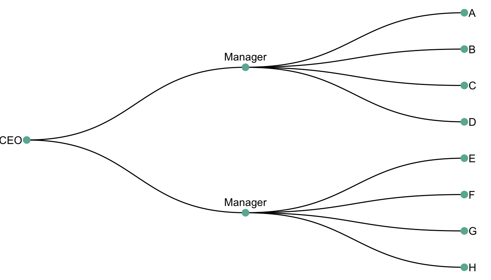
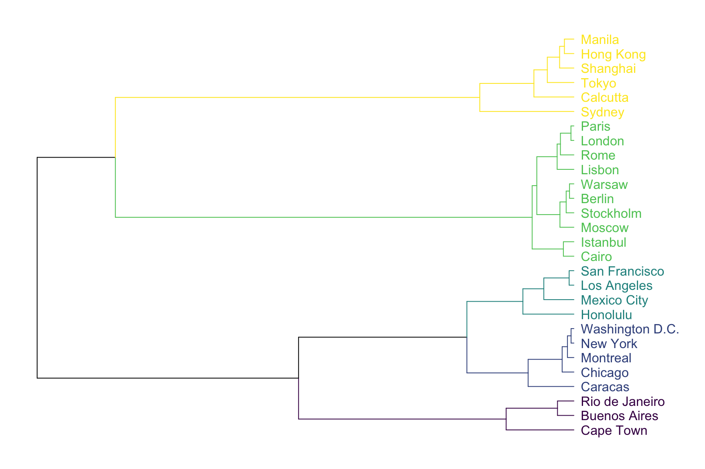

Dendrogram
definition - mistake - related - code
A dendrogram is a network structure. It is constituted
of a root node that gives birth to several
nodes connected by edges or
branches. The last nodes of the hierarchy are called
leaves. In the following example, the CEO is the root node.
He manages 2 managers that manage 8 employees (the leaves).
# libraries
library(ggraph)
library(igraph)
library(tidyverse)
library(dplyr)
library(dendextend)
library(colormap)
library(kableExtra)
options(knitr.table.format = "html")
# create a data frame
data=data.frame(
level1="CEO",
level2=c( rep("boss1",4), rep("boss2",4)),
level3=paste0("mister_", letters[1:8])
)
# transform it to a edge list!
edges_level1_2 = data %>% select(level1, level2) %>% unique %>% rename(from=level1, to=level2)
edges_level2_3 = data %>% select(level2, level3) %>% unique %>% rename(from=level2, to=level3)
edge_list=rbind(edges_level1_2, edges_level2_3)
# Now we can plot that
mygraph <- graph_from_data_frame( edge_list )
ggraph(mygraph, layout = 'dendrogram', circular = FALSE) +
geom_edge_diagonal() +
geom_node_point(color="#69b3a2", size=3) +
geom_node_text(
aes( label=c("CEO", "Manager", "Manager", LETTERS[8:1]) ),
hjust=c(1,0.5, 0.5, rep(0,8)),
nudge_y = c(-.02, 0, 0, rep(.02,8)),
nudge_x = c(0, .3, .3, rep(0,8))
) +
theme_void() +
coord_flip() +
scale_y_reverse() 
Two type of dendrogram exist, resulting from 2 types of dataset:
hierarchic dataset provides the links between nodes
explicitely. Like above.clustering algorythm can be visualized
as a dendrogram.
Let’s consider a distance matrix that provides
the distance between all pairs of 28 major cities. Note that this kind
of matrix can be computed from a multivariate dataset,
computing distance between each pair of individual using
correlation or euclidean distance.
# Load the data
data <- read.table("https://raw.githubusercontent.com/holtzy/data_to_viz/master/Example_dataset/13_AdjacencyUndirecterWeighted.csv", header=T, row.names="Cities.", sep=",") %>% as.matrix
data <- read.table("../Example_dataset/13_AdjacencyUndirecterWeighted.csv", header=T, sep=",") %>% as.matrix
colnames(data) <- gsub("\\.", " ", colnames(data))
data <- data %>%
as.data.frame() %>%
mutate_all(~ gsub(" ", "", .)) %>%
as.matrix()
data <- apply(data, 2, as.numeric)
data <- data[,-1] # remove the first column (city names)
# show data
tmp <- data %>% as.data.frame() %>% select(1,3,6) %>% .[c(1,3,6),]
tmp[is.na(tmp)] <- "-"
tmp %>% kable() %>%
kable_styling(bootstrap_options = "striped", full_width = F)| Berlin | Cairo | Caracas | |
|---|---|---|---|
| 1 |
|
1795 | 5247 |
| 3 | 1795 |
|
6338 |
| 6 | 5247 | 6338 |
|
It is possible to perform hierarchical
cluster analysis on this set of dissimilarities. Basically, this
statistical method seeks to build a hierarchy of clusters:
it tries to group sample that are close one from another.
The result can be seen as a dendrogram:
# Perform hierarchical cluster analysis.
dend <- as.dist(data) %>%
hclust(method="ward.D") %>%
as.dendrogram()
# Plot with Color in function of the cluster
leafcolor <- colormap(colormap = colormaps$viridis, nshades = 5, format = "hex", alpha = 1, reverse = FALSE)
par(mar=c(1,1,1,7))
dend %>%
set("labels_col", value = leafcolor, k=5) %>%
set("branches_k_color", value = leafcolor, k = 5) %>%
plot(horiz=TRUE, axes=FALSE)
As expected, cities that are in same geographic area tend to be
clusterized together. For example, the yellow cluster is
composed by all the Asian cities of the dataset. Note that the
dendrogram provides even more information. For instance, Sydney appears
to be a bit further to Calcutta than calcutta is from Tokyo: this can be
deduce from the branch size that represents the distance.
A common task consists to compare the result of a clustering with an expected result. For instance, we can check if the countries are indeed grouped in continent using a color bar:
# Create a color vector with continent
continent <- c("Europe", "South America", "Africa", "Asia", "Africa", "South America", "North America", "Asia", "North America",
"Europe", "Europe","Europe", "North America", "Asia", "South America", "North America", "Europe", "North America",
"Europe", "South America", "Europe", "North America", "Asia", "Europe", "Asia", "Asia", "Europe",
"North America"
)
barcolor <- colormap(colormap = colormaps$viridis, nshades = 5, format = "hex", alpha = 1, reverse = FALSE)
barcolor <- barcolor[as.numeric(as.factor(continent))]
# Make the dendrogram
par(mar=c(10,2,2,2))
dend %>%
set("labels_col", value = leafcolor, k=5) %>%
set("branches_k_color", value = leafcolor, k = 5) %>%
plot(axes=FALSE)
colored_bars(colors = barcolor, dend = dend, rowLabels = "continent")This graphic allows to validate that the clustering indeed grouped cities by continent. There are a few discrepencies that are logical. Indeed, Mexico city has been considered as a city of South America here, altough it is probably closer from North America as suggested by the clustering.
Many variations exist for dendrogram. It can be horizontal or vertical as shown before. It can also be linear or circular. The advantage of the circular verion being that it uses the graphic space more efficiently:
# Libraries
library(ggraph)
library(igraph)
library(tidyverse)
library(RColorBrewer)
set.seed(1)
# create a data frame giving the hierarchical structure of your individuals
d1=data.frame(from="origin", to=paste("group", seq(1,10), sep=""))
d2=data.frame(from=rep(d1$to, each=10), to=paste("group", seq(1,100), sep="_"))
edges=rbind(d1, d2)
# create a vertices data.frame. One line per object of our hierarchy
vertices = data.frame(
name = unique(c(as.character(edges$from), as.character(edges$to))) ,
value = runif(111)
)
# Let's add a column with the group of each name. It will be useful later to color points
vertices$group = edges$from[ match( vertices$name, edges$to ) ]
#Let's add information concerning the label we are going to add: angle, horizontal adjustement and potential flip
#calculate the ANGLE of the labels
vertices$id=NA
myleaves=which(is.na( match(vertices$name, edges$from) ))
nleaves=length(myleaves)
vertices$id[ myleaves ] = seq(1:nleaves)
vertices$angle= 90 - 360 * vertices$id / nleaves
# calculate the alignment of labels: right or left
# If I am on the left part of the plot, my labels have currently an angle < -90
vertices$hjust<-ifelse( vertices$angle < -90, 1, 0)
# flip angle BY to make them readable
vertices$angle<-ifelse(vertices$angle < -90, vertices$angle+180, vertices$angle)
# Create a graph object
mygraph <- graph_from_data_frame( edges, vertices=vertices )
# prepare color
mycolor <- colormap(colormap = colormaps$viridis, nshades = 6, format = "hex", alpha = 1, reverse = FALSE)[sample(c(1:6), 10, replace=TRUE)]
# Make the plot
ggraph(mygraph, layout = 'dendrogram', circular = TRUE) +
geom_edge_diagonal(colour="grey") +
scale_edge_colour_distiller(palette = "RdPu") +
geom_node_text(aes(x = x*1.15, y=y*1.15, filter = leaf, label=name, angle = angle, hjust=hjust, colour=group), size=2.7, alpha=1) +
geom_node_point(aes(filter = leaf, x = x*1.07, y=y*1.07, colour=group, size=value, alpha=0.2)) +
scale_colour_manual(values= mycolor) +
scale_size_continuous( range = c(0.1,7) ) +
theme_void() +
theme(
legend.position="none",
plot.margin=unit(c(0,0,0,0),"cm"),
) +
expand_limits(x = c(-1.3, 1.3), y = c(-1.3, 1.3))
Another common variation is to display a heatmap at the bottom of the dendrogram. Indeed, it allows to visualize the distance between each sample and thus to understand why the clustering algorythm put 2 samples next to each other.
Data To Viz is a comprehensive classification of chart types organized by data input format. Get a high-resolution version of our decision tree delivered to your inbox now!

A work by Yan Holtz for data-to-viz.com